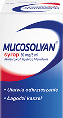
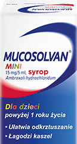
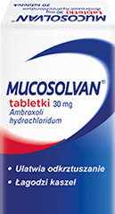

Nie chowaj się
niech kaszel
się schowa
używaj
aż do roku
Po otwarciu1

Oczyszcza drogi oddechowe1
Mucosolvan wspomaga naturalny odruch oczyszczania dróg oddechowych z zalegającej wydzieliny.1
Ułatwia odkrztuszanie1
Syrop Mucosolvan już od pierwszego dnia leczenia znacznie ułatwia odkrztuszanie i zmniejsza lepkość wydzieliny.11
Odbudowuje naturalną ochronę9
Ambroksol, zawarty w syropie na kaszel Mucosolvan, pomaga odzyskać naturalną ochronę.1
Wspomaga organizm w walce z wirusami10
Wykazano, że ambroksol wywiera działanie przeciwzapalne1,8, jak i przeciwwirusowe.10
Jak rozpoznać
rodzaj kaszlu?
Kaszel to fizjologiczny odruch obronny, służący uwolnieniu dróg oddechowych od nadmiaru wydzieliny, pyłów czy ciał obcych.2

Kaszel suchy
Ataki suchego, duszącego kaszlu pojawiają się w początkowej fazie infekcji. Charakterystycznym dla niego dźwiękiem jest "poszczekiwanie". Powoduje także podrażnienie tchawicy.3,4,5,6
Kaszel mokry
Mokry kaszel pojawia się zwykle po 4 dniach występowania kaszlu suchego. Towarzyszy mu występowanie gęstej, lepkiej wydzieliny do odksztuszenia oraz bulgoczący, głębszy dźwięk.3,5,6
W KASZLU MOKRYM
pomocne są leki wykrztuśne
- np. syrop Mucosolvan.
Dlaczego
przy Kaszlu mokrym
warto wybrać
Syrop Mucosolvan?1
Syrop ważny aż rok po otwarciu1
Do stosowania już po 1+ roku życia1
Nie zawiera cukru i laktozy1
Nie zawiera alkoholu1
dawkowanie
| Dzieci 1-2 lat | 2 razy w ciągu doby po 2,5 ml syropu |
| Dzieci 2-6 lat | 3 razy w ciągu doby po 2,5 ml syropu |
| Dzieci 6-12 lat | 2 do 3 razy w ciągu doby po 5 ml syropu |
| Dorośli i dzieci powyżej 12 lat |
2 razy w ciągu doby po 10 ml syropu |
| Syrop Mucosolvan można przyjmować z posiłkiem lub bez posiłków. Produktu nie należy podawać przed snem. | |
skład
|
Substancją czynną leku jest ambroksolu chlorowodorek (Ambroxoli hydrochloridum). 5 ml syropu zawiera 30 mg ambroksolu chlorowodorku. |
|
Substancje pomocnicze: sukraloza, kwas benzoesowy, hydroksyetyloceluloza, aromat owoców truskawkowych PHL-132200, aromat waniliowy PHL-114481, woda oczyszczona. |
Zobacz, że
nie trzeba
się chować
Rodzina produktów
Mucosolvan
| Typ Produktu |
|---|
| Właściwości |
| Składnik |
| Opakowanie |
| |
|  |
2x WIĘCEJ |
 |  |
|---|---|---|---|
| MUCOSOLVAN 100ml |
MUCOSOLVAN 200ml |
MUCOSOLVAN MINI |
MUCOSOLVAN TABLETKI |
| Syrop Lek bez recepty |
Syrop Lek bez recepty |
Syrop Lek bez recepty |
Tabletki Lek bez recepty |
| Ułatwia odkrztuszanie, łagodzi kaszel | Ułatwia odkrztuszanie, łagodzi kaszel | ||
| 30 mg/5 ml Ambroxoli hydrochloridum | 30 mg/5 ml Ambroxoli hydrochloridum | 30 mg/5 ml Ambroxoli hydrochloridum | 30 mg Ambroxoli hydrochloridum |
| 100 ml | 200 ml | 100 ml | 20 tabletek |
Jak pozbyć się
niechcianego kaszlu?
Kaszel to jedna z najczęstszych dolegliwości, z jaką pacjenci zgłaszają się do lekarza POZ. Jego przyczyną są najczęściej wirusowe zakażenia górnych dróg oddechowych, które wymagają jedynie leczenia objawowego.2 Jak jednak rozpoznać czy męczy nas kaszel suchy czy mokry? I jakie leczenie zastosować w przypadku konkretnego rodzaju kaszlu? Dowiedz się więcej!2